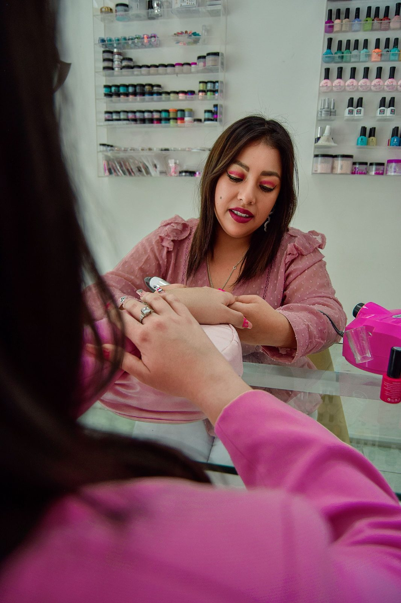
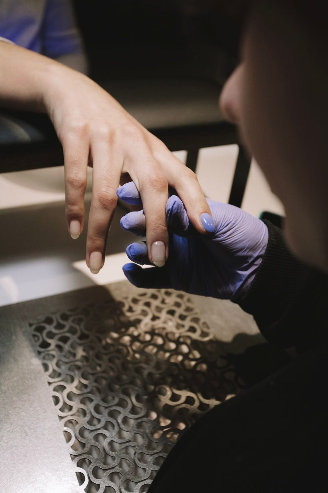

Inside the salon



Melissa Nails is a nail salon at 608 Clinton Ave in Albany. Manicures, pedicures, gel polish, acrylic and dip nails, and nail art, with walk-ins welcome.

A manicure in progress. Stock photo.
Melissa Nails has served Albany since 1997, according to its hub.biz listing, which also describes it as women-owned. The salon sits on Clinton Ave, and reviews mention eyebrow waxing, facials and eyelash services alongside nails.
Walk-ins are welcome, according to customer reviews. No price list is published publicly, so ask in the salon about services and pricing.
